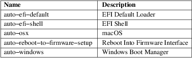

loader.conf − Configuration file for systemd−boot
ESP/loader/loader.conf, ESP/loader/entries/*.conf XBOOTLDR/loader/entries/*.conf
systemd-boot(7) will read ESP/loader/loader.conf, and any files with the ".conf" extension under ESP/loader/entries/ on the EFI system partition (ESP), and XBOOTLDR/loader/entries/ on the extended boot loader partition (XBOOTLDR) as defined by Boot Loader Specification [1] .
Each of these configuration files must consist of series of newline (i.e. ASCII code 10) separated lines, each consisting of an option name, followed by whitespace, and the option value. "#" may be used to start a comment line. Empty and comment lines are ignored. The files use UTF−8 encoding.
Boolean arguments may be written as "yes"/"y"/"true"/"t"/"on"/"1" or "no"/"n"/"false"/"f"/"off"/"0".
The configuration options supported by ESP/loader/entries/*.conf and XBOOTLDR/loader/entries/*.conf files are defined as part of the Boot Loader Specification [1] .
The following configuration are supported by the loader.conf configuration file:
default
A glob pattern to select the default entry. The default entry may be changed in the boot menu itself, in which case the name of the selected entry will be stored as an EFI variable, overriding this option.
If set to "@saved" the chosen entry will be saved as an EFI variable on every boot and automatically selected the next time the boot loader starts.
Table 1. Automatically detected entries will use the following names:

Supported glob wildcard patterns are "?", "*", and "[...]" (including ranges). Note that these patterns use the same syntax as glob(7), but do not support all features. In particular, set negation and named character classes are not supported. The matching is done case−insensitively on the entry ID (as shown by bootctl list).
timeout
How long the boot menu should be shown before the default entry is booted, in seconds. This may be changed in the boot menu itself and will be stored as an EFI variable in that case, overriding this option.
If set to "menu−hidden" or "0" (the default) no menu is shown and the default entry will be booted immediately. The menu can be shown by pressing and holding a key before systemd−boot is launched. Setting this to "menu−force" disables the timeout while always showing the menu.
console−mode
This option configures the resolution of the console. Takes a number or one of the special values listed below. The following values may be used:
0
Standard UEFI 80x25 mode
1
80x50 mode, not supported by all devices
2
the first non−standard mode provided by the device firmware, if any
auto
Pick a suitable mode automatically using heuristics
max
Pick the highest−numbered available mode
keep
Keep the mode selected by firmware (the default)
editor
Takes a boolean argument. Enable (the default) or disable the editor. The editor should be disabled if the machine can be accessed by unauthorized persons.
auto−entries
Takes a boolean argument. Enable (the default) or disable entries for other boot entries found on the boot partition. In particular, this may be useful when loader entries are created to show replacement descriptions for those entries.
auto−firmware
A boolean controlling the presence of the "Reboot into firmware" entry (enabled by default). If this is disabled, the firmware interface may still be reached by using the f key.
beep
Takes a boolean argument. If timeout enabled beep every second, otherwise beep n times when n−th entry in boot menu is selected (default disabled). Currently, only x86 is supported, where it uses the PC speaker.
secure−boot−enroll
Danger: this feature might soft−brick your device if used improperly.
Controls enrollment of secure boot keys found on the ESP if the system is in setup mode:
off
No action is taken.
manual
Boot entries for found secure boot keys are created that allow manual enrollment.
if−safe
Same behavior as manual, but will try to automatically enroll the key "auto" if it is considered to be safe. Currently, this is only the case if the system is running inside a virtual machine.
force
Always enroll the "auto" key if found. Note that a warning message with a timeout will still be shown if this operation is unknown to be safe.
The different sets of variables can be set up under /loader/keys/NAME where NAME is the name that is going to be used as the name of the entry. This allows one to ship multiple sets of Secure Boot variables and choose which one to enroll at runtime.
Supported Secure Boot variables are one database for authorized images, one key exchange key (KEK) and one platform key (PK). For more information, refer to the UEFI specification [2] , under Secure Boot and Driver Signing. Another resource that describe the interplay of the different variables is the EDK2 documentation [3] .
A complete set of UEFI variable includes db.auth, KEK.auth and PK.auth. Note that these files need to be authenticated UEFI variables. See below for an example of how to generate them from regular X.509 keys.
uuid=$(systemd−id128
new −−uuid)
for key in PK KEK db; do
openssl req −new −x509 −subj
"/CN=${key}/" −keyout "${key}.key"
−out "${key}.crt"
openssl x509 −outform DER −in
"${key}.crt" −out "${key}.der"
sbsiglist −−owner "${uuid}"
−−type x509 −−output
"${key}.esl" "${key}.der"
done
for
key in MicWinProPCA2011_2011−10−19.crt
MicCorUEFCA2011_2011−06−27.crt
MicCorKEKCA2011_2011−06−24.crt; do
curl
"https://www.microsoft.com/pkiops/certs/${key}"
−−output "${key}"
sbsiglist −−owner
77fa9abd−0359−4d32−bd60−28f4e78f784b
−−type x509 −−output
"${key%crt}esl" "${key}"
done
#
Optionally add Microsoft Windows Production CA 2011 (needed
to boot into Windows).
cat MicWinProPCA2011_2011−10−19.esl
>>db.esl
#
Optionally add Microsoft Corporation UEFI CA 2011 for
firmware drivers / option ROMs
# and third−party boot loaders (including shim). This
is highly recommended on real
# hardware as not including this may soft−brick your
device (see next paragraph).
cat MicCorUEFCA2011_2011−06−27.esl
>>db.esl
#
Optionally add Microsoft Corporation KEK CA 2011.
Recommended if either of the
# Microsoft keys is used as the official UEFI revocation
database is signed with this
# key. The revocation database can be updated with
fwupdmgr(1).
cat MicCorKEKCA2011_2011−06−24.esl
>>KEK.esl
attr=NON_VOLATILE,RUNTIME_ACCESS,BOOTSERVICE_ACCESS,TIME_BASED_AUTHENTICATED_WRITE_ACCESS
sbvarsign −−attr ${attr} −−key
PK.key −−cert PK.crt −−output
PK.auth PK PK.esl
sbvarsign −−attr ${attr} −−key
PK.key −−cert PK.crt −−output
KEK.auth KEK KEK.esl
sbvarsign −−attr ${attr} −−key
KEK.key −−cert KEK.crt −−output
db.auth db db.esl
This feature is considered dangerous because even if all the required files are signed with the keys being loaded, some files necessary for the system to function properly still won't be. This is especially the case with Option ROMs (e.g. for storage controllers or graphics cards). See Secure Boot and Option ROMs [4] for more details.
reboot−for−bitlocker
Caveat: This feature is experimental, and is likely to be changed (or removed in its current form) in a future version of systemd.
Work around BitLocker requiring a recovery key when the boot loader was updated (disabled by default).
Try to detect BitLocker encrypted drives along with an active TPM. If both are found and Windows Boot Manager is selected in the boot menu, set the "BootNext" EFI variable and restart the system. The firmware will then start Windows Boot Manager directly, leaving the TPM PCRs in expected states so that Windows can unseal the encryption key. This allows systemd-boot(7) to be updated without having to provide the recovery key for BitLocker drive unlocking.
Note that the PCRs that Windows uses can be configured with the "Configure TPM platform validation profile for native UEFI firmware configurations" group policy under "Computer Configuration\Administrative Templates\Windows Components\BitLocker Drive Encryption". When Secure Boot is enabled, changing this to PCRs "0,2,7,11" should be safe. The TPM key protector needs to be removed and then added back for the PCRs on an already encrypted drive to change. If PCR 4 is not measured, this setting can be disabled to speed up booting into Windows.
#
/boot/efi/loader/loader.conf
timeout 0
default 01234567890abcdef1234567890abdf0−*
editor no
The menu will not be shown by default (the menu can still be shown by pressing and holding a key during boot). One of the entries with files with a name starting with "01234567890abcdef1234567890abdf0−" will be selected by default. If more than one entry matches, the one with the highest priority will be selected (generally the one with the highest version number). The editor will be disabled, so it is not possible to alter the kernel command line.
systemd-boot(7), bootctl(1)
|
1. |
Boot Loader Specification |
https://uapi-group.org/specifications/specs/boot_loader_specification
|
2. |
UEFI specification |
https://uefi.org/specifications
|
3. |
EDK2 documentation |
https://edk2-docs.gitbook.io/understanding-the-uefi-secure-boot-chain/secure_boot_chain_in_uefi/uefi_secure_boot
|
4. |
Secure Boot and Option ROMs |
https://github.com/Foxboron/sbctl/wiki/FAQ#option-rom